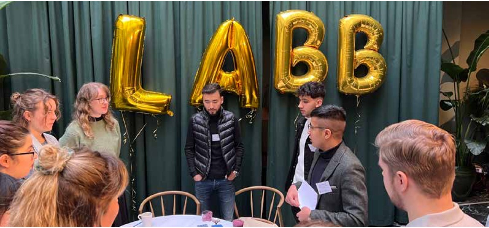
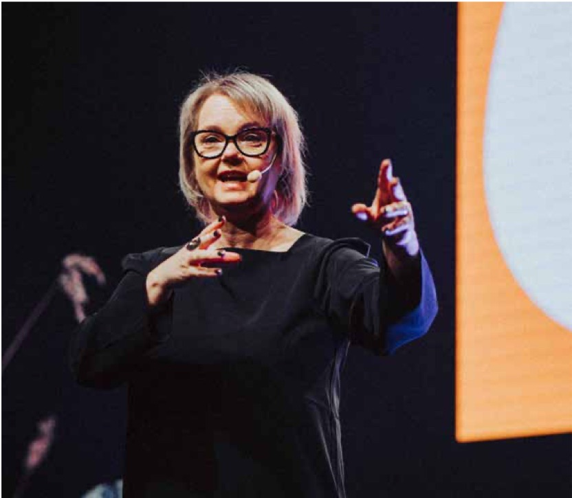
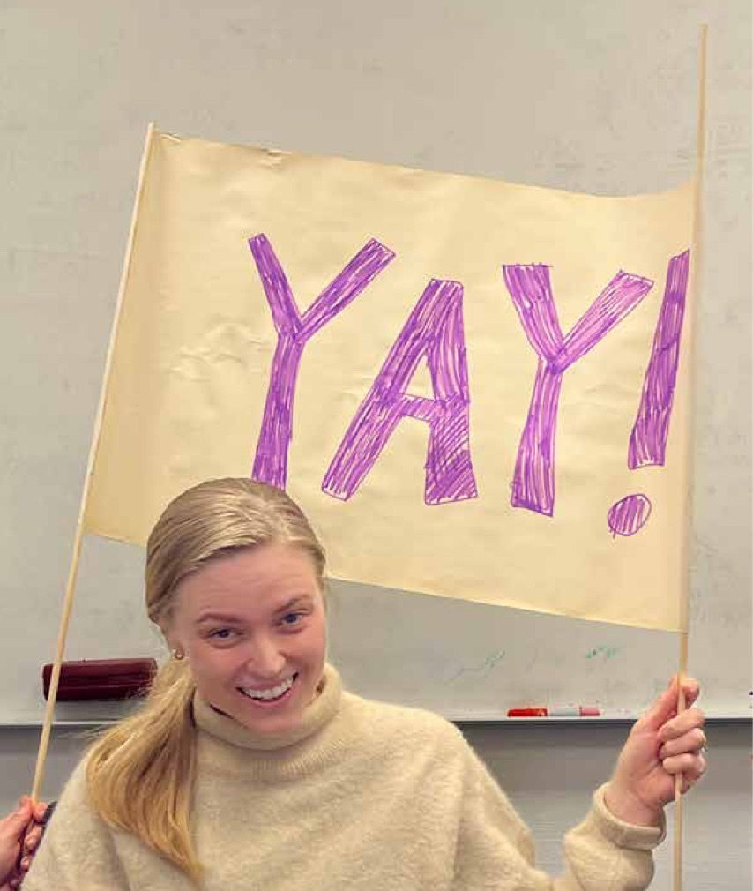
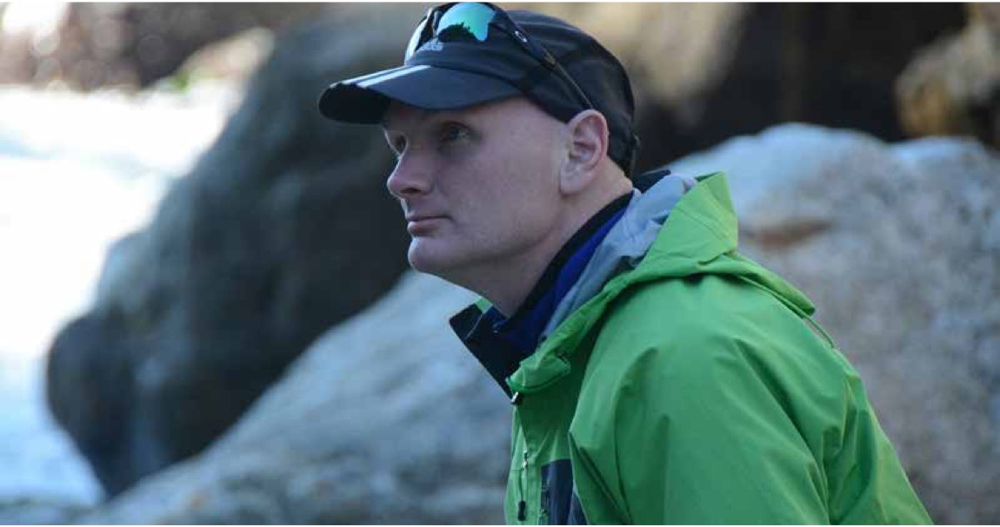
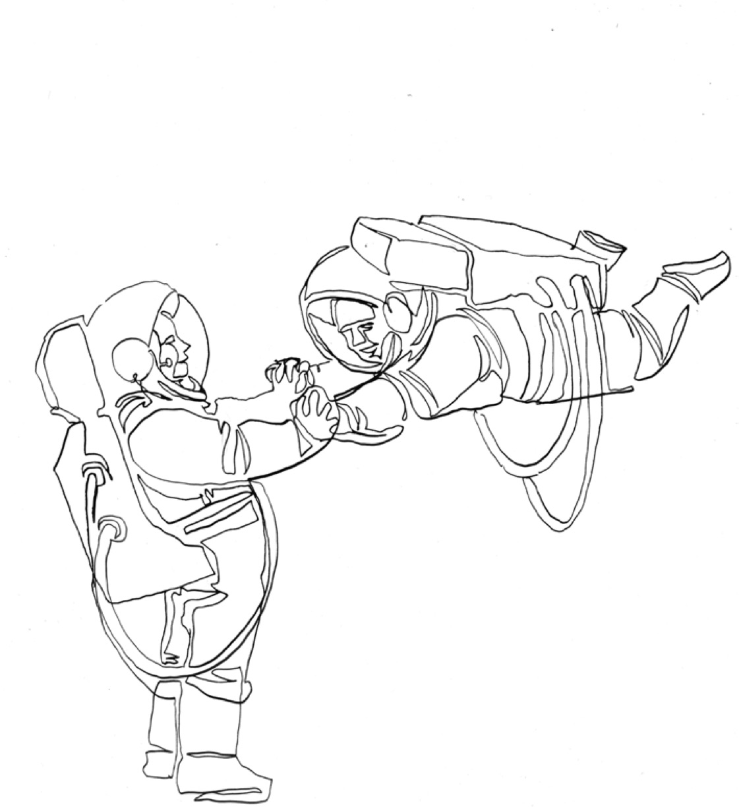
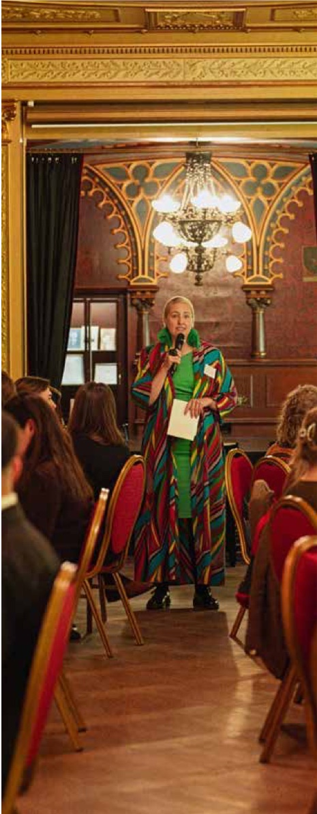
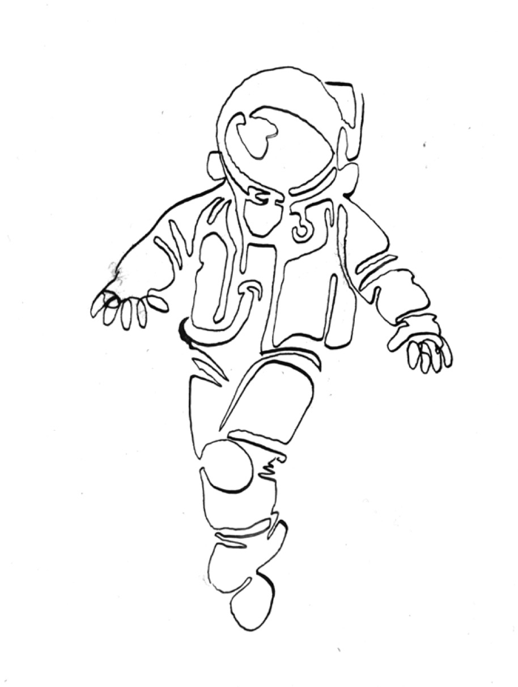

Play Against The Grain - Att skapa plats för lärandet

Vi talar ofta om lärande som något som sker i formella rum på en specifikt avsatt tid för ändamålet, i klassrum, kurser och utbildningar. Men istället pekar väldigt mycket på att lärandet avgörs av det som ligger runt omkring; kulturen, normerna och tempot. De parametrarna kan antingen bjuda in till eller stänga ute möjligheten att lära. Rent konkret sker lärande kontinuerligt i projektgrupper, arbetsmoment och i mötet mellan människor. Att skapa plats för lärande handlar därför inte bara om metoder, utan om hur vi formar sammanhang där människor vågar prova, tänka högt, göra om och göra rätt. Det är ett ledarskapsuppdrag, ett designuppdrag och ett kulturuppdrag på samma gång.
När vardagen snurrar snabbt söker vi ofta efter mer struktur och mer styrning, fler boxar att bocka av, fler kurser att köpa in. Paradoxen här är att verkligt lärande behöver utrymme att pröva nytt i vardagen och den som lär behöver även möjlighet att återhämta sig. Vi lär när vi kan testa en idé, när vi får signaler på vad som fungerar, när vi ges förutsättningar och vågar tänka om och försöka igen. I praktiken betyder en tillåtande struktur och ritualer som gör plats för reflektion, korta avstämningar och enkla omtag, allt det som tar oss från inkodad kunskap till förändrat beteende och nya insikter över tid.
Fokusera på mänsklighet
Forskningen är tydlig på en punkt, människor lär och presterar bättre i miljöer där det är tryggt att ta mellanmänskliga risker, ställa frågor, lyfta osäkerhet eller testa halvfärdiga idéer. Psykologisk trygghet, handlar som Amy Edmondson beskrivit i sin forskning om att skapa team där människor vågar be om hjälp, ge återkoppling och pröva nytt utan rädsla för sociala konsekvenser (Edmondson, 1999, 2018). Det är som du kan se, en grundton som återkommer genom hela denna bok.
Samma mönster syntes när Google analyserade hundratals team. Den viktigaste faktorn för effektivitet var inte vilka individer som ingick, utan hur det kändes att vara i teamet. Psykologisk trygghet stack ut som nyckeln till att teamen faktiskt vågade använda sin samlade kompetens, ta risker tillsammans och dra lärdom av misstag (Google, n.d.).
Vi är alla olika, men vi har länge hanterat många olika frågor med lösningar som förväntas passa alla. Om psykologisk trygghet ska finnas i verkligheten och inte bara i fina dokument med värderingar, behöver även design, kultur och ledarskap kunna ta vara på olikheter. Göra plats för diversitet av alla de slag vi människor besitter, ta tillvara på den stora potential som finns i det. I den som går sin egen väg, som uttrycker motstånd eller alternativa lösningar, finns en enorm kraft och energi att hämta, precis som Binette Seck tidigare uttryckte. Men för att den potentialen ska kunna frigöras krävs rätt förutsättningar. Olika förutsättningar. Trygga förutsättningar.
Nutidens brist på fantasi
Att skapa plats för lärande kräver också vår föreställningsförmåga, vi behöver träna förmågan att se fler möjliga vägar och lösningar innan vi tar ett beslut. Idag talar många om en brist på just den förmågan, vi har svårt att föreställa oss flera möjliga framtider, vi hemfaller lätt åt kanske dystopi eller tech-optimism beroende på hur vi fungerar. UNESCO beskriver detta som en ”poverty of the imagination” och lyfter “futures literacy*” som en förmåga som aktiverar och stärker fantasin, och därmed vår kapacitet att förbereda oss, återhämta oss och hitta nya vägar när förändring sker (UNESCO, n.d.-a; UNESCO, n.d.-b).
Även OECD betonar att elever och arbetstagare behöver utveckla sin agens, kreativitet och förmåga att hantera osäkerhet för att kunna forma och anpassa sig till framtiden, inte bara reaktivt agera på den (OECD, 2018; OECD, 2020). I forskningslitteraturen anges just futures literacy som ett ramverk för att medvetet variera våra antaganden om framtiden, för vi ska kunna att träna omställningsförmåga i komplexa och osäkra miljöer (Magnus et al., 2021).
Även designtänkande ger ett praktiskt språk för detta, att formulera syfte, förstå användarens behov, visualisera alternativ, prototypa tidigt och lära i korta cykler. När vi arbetar så flyttar vi fokus från att ha rätt i teorin - till att lära i praktiken. Från ett instruktörs- och kunskapsfokus, till att sätta själva lärandet i centrum (Hasso Plattner Institute of Design at Stanford, n.d., Liedtka, 2018).
Ledarskapet, alltid ledarskapet
I Läran att lära har vi gång på gång sett samma sak. Ledarskap löper som en röd tråd i stora mängder forskning som handlar om hur lärande ges bästa förutsättningar att ske. När ledare förtydligar varför arbetet finns, när de håller ihop riktningen, samtidigt som de öppnar upp för att prova nya saker, då uppstår lärande i vardagen. Det kan gälla lärare som leder i ett klassrum, eller chefen på en arbetsplats. Det kan också gälla oss alla i de många olika situationer där vi leder. När team får visualisera olika framtider, lägga enkla modeller på bordet, pröva roller och vägar innan allt fastställs, då växer både nyfikenhet och ansvar. När belöningar kopplas till beteenden som möjliggör lärande, inte bara till slutresultatet, då orkar människor fortsätta även när motstånd uppstår.
Omfamna motståndet
Samtidigt behöver vi erkänna friktionen. Motstånd är inte ett fel i systemet, det är ett tecken på att något rör sig. Uppgiften är att göra motståndet synligt och användbart, att kalibrera riktningen utan att överge syftet. Här blir språk och ritualer viktiga, korta debriefing-möten efter möten, enkla retrospektiv, avtal om hur vi ger och tar emot feedback, tydliga normer för hur vi avbryter, hur vi ber om hjälp och hur vi gör omtag. Samtal mellan människor som ger en känsla av meningsfullhet. Fördjupat ledarskap stödjer detta, genom att göra trygghet operativ i vardagen och ge människor frihet med ansvar.
Den här delen av Playbooken samlar röster som visar hur vi kan hålla och ta omsorg om en plats för lärande när strukturerna drar åt andra håll. Hur de som går emot strömmen, kan berika våra sammanhang och perspektiv.
Anna-Lena Rikardsson talar i nästa intervju om hur organisationer kan ge lärandet rum i praktiken. Josephine Bladh beskriver ett ledarskap som kombinerar autenticitet, omtanke och mod, ett ledarskap som skapar trygghet och ger förutsättningar för såväl lärande som föreställningsförmåga.
Liksom Anna-Lena och Josephine utmanar Johan Cedermark i vårt kapitel det givna - men från en annan plats. Genom konceptet Trainstation Sverige har han byggt mötesplatser där lärande växer ur skapande, där barn och unga får tillbaka känslan av att kunna och på så sätt stärker sin självkänsla, och där motivationen tänds på riktigt.
Tillsammans pekar de allihop mot samma kärna, lärande uppstår när vi designar för att människor ska våga delta på riktigt, prova, tänka, ändra sig och fortsätta.
Intervju med Anna-Lena Rikardsson
Lärande är mänskligt hantverk

Anna-Lena Rikardsson är grundare av Strawberry Planet, ett kreativt bolag som kombinerar berättande, strategi och design för att skapa förändring. Hon har en bakgrund inom mellanmänskliga processer, transformation och teatervärlden och har under många år hjälpt organisationer att hitta och förmedla sin mening – på riktigt. Genom Strawberry Planet utforskar hon hur berättelser och lärande kan bli verktyg för hållbar transformation. Hennes arbete präglas av nyfikenhet, mod och en stark tro på att kreativitet kan driva både mänsklig och samhällelig utveckling.
I Play Against the Grain talar vi om att göra tvärtom när det behövs, såsom exempelvis att börja i människan, inte i metoder eller scheman. Här möter du Anna-Lena Rikardsson, producenten som blev skolbyggare, organisations utvecklare och gick vidare till att ta fram och driva plattformar för lärande - och som envist låter mänskliga behov styra hur lärande blir till verklig förändring i arbetet. Hennes röda tråd är att skapa sammanhang där människor känner sig sedda, vågar pröva och kan omsätta det i vardagen.
Jag vill, jag kan, och det är upp till mig
När Anna-Lena själv som trettonåring klev in på en elevrådskurs möttes hon av vuxna som byggde trygghet före innehåll. Upplevelsen blev en startpunkt som fick henne att känna och inse redan där och då att ett tryggt rum skapar mod och nyfikenhet. Den insikten har hon förvaltat sedan dess, i teaterproduktioner, i skapandet av skolan Hyper Island och i de senare årens förändringsprogram ute i arbetslivet. Istället för att fråga “vilken kurs behövs?” ställer hon frågan “vilket sammanhang gör det möjligt att våga, prova och fortsätta?”.
På Hyper Island utgick teamet från att fakta snabbt blir inaktuell. Man insåg att kunskapen kring olika programvaror under sena 90-talet, hade sämre bäst-före-datum än mjölk. Det som istället består är förmågor som att lära nytt, samarbeta, stå ut i osäkerhet, ta ansvar och kunna samverka. Den hållningen krävde att lika mycket fokus lades på hur - som på vad, det behövdes strukturer för trygghet, arbetssätt som bjuder in, ett tempo som går att följa och ständiga återkopplingar. Poängen var att träna färdigheter som gör lärandet användbart i skarpa lägen.
Från klassrum till skala
När stora organisationer senare började be om lärinsatser för alla, inte bara för de hundra högsta cheferna som var populärt ett tag, växlade Anna-Lena och hennes team över till att bygga lösningar som kan skalas. I Strawberry Planet sitter utvecklare, UX-designers och learning designers i samma rum tills helheten fungerar. Tekniken bär människan, inte tvärtom. Grunden är enkel; korta, respektfulla förarbeten som går att göra mobilt; därefter guidade gruppmoment där åtaganden formuleras, följs upp och justeras. Allt är gjort för att passa verkliga möten och skift, hellre kort och ofta än långt och sällan.
När lärande blir gemensamt arbete
Kunskap kan du läsa dig till. Förändring uppstår när teamet pratar om vad kunskapen betyder “hos oss” och vem som gör vad nu. Därför är gruppmomenten inte presentationer, utan tillsammans-arbete. Man sammanför människors reflektioner, vardag och utmaningar, man prioriterar, fördelar, tar små steg framåt och går tillbaka igen. Effekten märks när team börjar följa upp sina egna åtaganden, slutar med sådant som inte längre behövs och hittar en rytm där lärandet ligger nära genomförandet.
Som sedan länge verksam i UGL* och som tidigare student till den legendariska teamforskaren Susan Wheelan, betonar Anna-Lena att grupputveckling inte är “fluff”. Trygghet, tydlighet och ömsesidigt ansvar går att mäta och koppla till kvalitet, leverans och välmående. Det viktiga är att göra mätningarna meningsfulla, alltså följa upp exempelvis vilka beteenden som faktiskt förändrades, inte bara hur många kursmoduler som klickats igenom.

Mer samspel och rytm
Utmaningen i arbetslivet är sällan brist på material. Det är brist på prioritering, samspel och vardagsrytm. Därför måste ledare visa att lärande är arbete, ge plats i kalendern och bekräfta att åtaganden räknas. När det finns ett tydligt “varför” kopplad till strategi, ett kort förarbete som gör alla förberedda och ett fokuserat gruppmoment med uppföljning, stiger både deltagande och effekt.
Anna-Lena beskriver två egna vanor för lärande i vardagen. Den ena är tystnaden: promenader utan input, där hjärnan får bearbeta alla intryck som ständigt sköljer över oss. Den andra är att medvetet söka samtal med människor som tänker annorlunda. Det känns inte som “plugg” - men i backspegeln har perspektiven breddats, idéerna vässats och nästa steg blivit tydligare. Så skapas en stor del av vårt lärande.
Playguide - gör lärandet mänskligt, socialt och skalbart
Börja med varför och vart vi ska: koppla varje insats till strategi och konkret effekt i arbetet.
Dela upp resan: kort, mobilvänligt förarbete följt av en guidad gruppsession med tydliga åtaganden.
Gör det hjärnsmart: minimera friktion och visa bara det som behövs just nu.
Låt teamet äga tolkningen: prata om vad innehållet betyder här och nu, för er.
Följ upp åtaganden och beteenden, inte bara moduler: vad började ni göra,
vad slutade ni göra?
Ge ledarna en roll: de prioriterar tid, deltar och visar att lärande är arbete.
Träna förmågor, inte bara stoff: nyfikenhet, samspel, självledarskap och mod i osäkerhet.
Skapa rytm: korta pulser som passar verkliga möten och skift — hellre ofta och litet än sällan och stort.
Intervju med Johan Cedermark
I play therefore I am - att skapa självkänsla och motivation

Johan Cedermark är grundare och vd för Trainstation Sverige AB, en kreativ lärandemiljö där unga och vuxna möts genom teknik, musik, film och entreprenörskap. Under mer än ett decennium har han byggt upp Trainstation till en plats där idéer får växa, där digitalt skapande blir en väg till framtidstro och där lärande sker genom att göra. Johan brinner för att ge människor verktyg att utvecklas, uttrycka sig och hitta sin plats i den snabbt föränderliga värld vi lever i. Hans arbete handlar om att skapa tillgång, delaktighet och mening – med lärande som gemensam drivkraft.
Om man frågar Johan Cedermark när det senast glimrade till i ett barns ögon, har han alltid ett färskt svar. Det händer varje vecka. På någon av Trainstations hittills fyra mötesplatser i landet sitter barn, unga och inte sällan även vuxna, varje dag djupt koncentrerade mitt i skapandet av sitt första spel, sin första låt eller sin första animerade berättelse. När de sedan visar upp resultatet för andra, tänds det där ljuset. Det är ögonblicket då något flyttar sig inombords, när lärandet känns på riktigt.
Trainstation erbjuder idag mötesplatser i Vivalla (Örebro), Karlskoga, Haninge och Skultuna. Här möts människor för digitalt skapande, men i praktiken är det ett ekosystem för att väcka och odla motivation, lärande, självtillit och självförtroende. Det handlar inte om att lära ut själva tekniken, utan om att använda den för att skapa en känsla av förmåga och autonomi, att ge människor en upplevelse av att kunna, växa och bli till. Löftet till varje besökare när de kommer, är att de på sextio minuter ska kunna ha skapat ett färdigt alster - inte för att prestera, utan för att känna den där korta men kraftfulla förskjutningen från jag kan inte - till jag kan.
”Första gången någon upplever att de faktiskt kan skapa något eget, då händer något i hela deras självbild”, säger Johan. ”Det är där lärandet börjar på riktigt.”.
När lust blir en drivkraft
Johan har själv en bakgrund i IT- och mediebranschen, där lärande är en nödvändighet för att kunna arbeta. Där begrepp som agilt och iterera är vardag, där man sen länge har testat sig fram för att kunna leverera det som behövs. Men när han såg sina egna barn kämpa med skolans mer statiska struktur började en annan fråga växa fram: varför organiserar vi inte lärande – för både barn och vuxna – utifrån det vi faktiskt vet väcker lusten att lära?
”Jag levde i en värld där utveckling var något man längtade efter. Samtidigt såg jag hur barn gick i skolan och tappade sin nyfikenhet. Jag ville förstå vad som går förlorat på vägen.”
Trainstation föddes ur den frågan. Det började som en digital fritidsgård i utanförskapsområdet Vivalla i Örebro – och utrustad med bredband, datorer och musikprogram fylldes lokalen snabbt. Det som lockade var inte tekniken i sig, utan friheten att skapa. Johan och hans team byggde vidare på den principen. Att lärande inte måste börja med teori, utan med en upplevelse.
Han kallar det för en syftesorienterad pedagogik eller det systemvetare kallar Top Down (ej att förväxla med en hierarkisk organisation). Genom att börja med helheten – att göra, uppleva, skapa – väcks motivationen för att sen förstå detaljerna. När någon får skapa sin första låt, ett smycke, en app, en robot eller sitt första spel, blir de mer nyfikna på hur det fungerar på djupet och vill lära mer.
”Vi visar varför det är värt att lära sig. Det är där skillnaden ligger.”
Självbilden som lärandets kärna
Många barn och unga som kommer till Trainstation bär på en stukad självbild, formad av jämförelser och misslyckanden. Johan känner igen sig i barnen. Som liten var han den som ofta blev vald sist på fotbollsplanen och som trodde att han inte kunde rita. Det var först långt senare, när han följde en rit-tutorial på YouTube, som han insåg att det inte var honom det var fel på – han hade bara aldrig fått rätt vägledning. Den insikten har format allt han gör i dag. Lärandet handlar inte om medfödd begåvning, utan om möjligheten att få prova, vägledas, misslyckas och lyckas tillsammans med andra. Lärande handlar inte om något man kan eller inte kan, utan om något man kan växa in i. Och växer gör det, många barn kommer tillbaka gång på gång och vill inte gå hem när det är dags att stänga.
”Flow för mig är när tid och rum bara försvinner och man är helt uppslukad i det man gör.”
Med vår Playbooks terminologi handlar det han beskriver om inre motivation och psykologisk trygghet. Människor lär när de känner sig trygga nog att försöka, och fria nog att misslyckas. Trainstation skapar den miljön genom en kultur där samarbete är naturligt och jämförelser saknar mening.
”Här är det exempelvis inte fusk att hjälpa varandra eller samarbeta. Det är själva poängen.”
Alla måste få en plats vid bordet
Trainstation har från början byggts med inkludering i åtanke. Alla fyra platser – i Örebro, Karlskoga, Haninge och Skultuna – ligger i områden där många barn och unga, men även vuxna, riskerar att hamna utanför, på olika sätt. Det kan handla om socioekonomiska villkor, om språkliga barriärer eller om människor som själva står långt från arbetsmarknaden. Men grundtanken är densamma: att skapa miljöer där tillgång till teknik, handledning och gemenskap blir en motkraft mot utanförskap. I mångt och mycket finns här samma tanke som Binette Seck gett uttryck för i tidigare kapitel. Jobben kommer finnas inom tech-området, och alla måste få en chans att ta sig in på den arbetsmarknaden.
”Det är ett lotteri vilka vuxna man möter i livet. Får du bra guidning, då upptäcker du att du har förmågor”, säger Johan Cedermark. ”Trainstation försöker därför förändra oddsen.”
Genom att bygga lärandeplatser mitt i vardagen, i kvarter där möjligheter ofta känns längre bort, skapas nya sammanhang där barn får möta vuxna som ser dem, lyfter dem och visar att de kan. Trainstations handledare är inte lärare utan noga utvalda och tränade för just för att se, stärka, stötta till självregisserat lärande och hitta potentialen inom varje person.
Digitalisering som demokrativerktyg
I den här oerhört digitala miljön är digitalisering inte ett mål, utan ett fundament, en grundläggande möjliggörare för snabba feedback-loopar och ett lustfyllt utforskande och lärande. Det handlar om att göra lärandet tillgängligt för fler - oavsett förkunskaper, bakgrund eller språk. En skärm kan bli ett instrument, en kamera, ett berättarverktyg, en kodmiljö - alltså många olika sätt att bygga sin egen värld. Repetition är nödvändigt, men på Trainstation vill man göra fler, kortare iterationer med digitala verktyg så att besökarna lär sig snabbare.
Nyfikenheten väcks när barnen får experimentera fritt. Den inre motivationen förstärks när de ser resultatet direkt. Framplockningen sker när de delar sitt arbete och får bekräftelse. Och den psykologiska tryggheten byggs genom gemenskap och tillit – när det är okej att vara nybörjare. ”
Vi vuxna pratar mycket om skärmtid, men vi borde prata mer om tid att skapa sin självbild och självkänsla”, menar Johan. ”När människor får skapa något eget, händer något som ingen algoritm kan ersätta. Men det skapandet kan mycket väl ske vid en skärm.”
“När barnen får känna att ‘shit, jag kan’, då händer någonting. Först självförtroende, men sen också självkänsla och självtillit.”
Från Strindberg till Snapchat
När Trainstation samarbetar med skolor utmanas gamla föreställningar om vad lärande kan och skulle behöva vara. De har testat att exempelvis ta sig an svenskämnet, genom att byta ut recensioner mot reaction-videos. Eleverna tränar fortfarande analys och reflektion, men i ett format som känns relevant för dem. Det här handlar inte om att förenkla, utan om att förstärka. När elever får göra tolv korta, engagerande iterationer istället för en lång uppsats, lär de sig snabbare och med större engagemang. Lusten blir en struktur, inte en slump.
Framtidens lärande som vardag
I dag finns Trainstation på fyra orter, men visionen är mycket större. Johan vill förändra vardagen för miljoner barn - inte genom att införa ännu ett utbildningsprogram, utan genom att bygga en ny kultur kring lärande.

Kanske på sikt också kunna ha påverkan på hela ekosystemet för utbildning och lärande.
”Vi vet att världen förändras snabbt. Men lärandet har halkat efter. Vi måste göra det lika naturligt att utvecklas som att andas. När fler får känna att de kan, oavsett var de börjar, förändrar vi inte bara individers framtid – vi förändrar hela samhället.”
För Johan är det mer än en pedagogisk idé. Det är en vision om alla människors potential.
”Jag vet att det låter naivt, men jag tror att självkänsla kan förändra allt. En trygg människa lär sig mer, orkar mer och vill mer. Och just det behöver vi mer än någonsin.”
Playguide – så bygger du lärande som stärker självkänsla
Börja med upplevelsen, inte instruktionen – skapa mening först.
Låt deltagarna lyckas snabbt, det väcker motivation.
Använd digitala verktyg för att skapa, inte bara konsumera.
Gör lärandet socialt – samarbete är katalysatorn.
Bygg trygghet genom tillit, inte kontroll.
Låt repetition ske naturligt, genom korta iterationer.
Synliggör utveckling snarare än prestation.
Låt varje framsteg bli en berättelse - om det faktum att alla kan.
Intervju med Josephine Bladh
Leda för lärande i rörelse

Josephine Bladh är kanslichef för Stiftelsen Konung Gustaf V:s 90-årsfond, som verkar för att främja frivillig ideell ungdomsverksamhet genom utbildning av ledare. Där leder hon också Ledarskapslabbet – en katalysator för ungas ledarskapsutveckling och demokratiska organisering. Med över tjugo års erfarenhet av ledarskap, innovation och förändringsarbete i civilsamhället har hon arbetat med fler än 150 ideella rörelser och drivs av frågan hur unga kan leda och lära i samhällstransformation.
Vägen in i ett lärande ledarskap
Josephine Bladh beskriver en lång praktik i civilsamhället, föreningsår, förtroendeuppdrag och chefskap. Tidigt fick hon syn på hur normer begränsar och hur röster kan stärkas när någon öppnar upp och ger plats. Erfarenheterna formade ett rättighetsperspektiv där barns och ungas egen röst är central. ”Jag har verkligen gjort mina 10 000 timmar,” säger hon, och konstaterar att hon alltid dragits till sammanhang där människor försöker förändra något tillsammans. Där det inte finns ett färdigt facit utan en vilja att förstå mer, prova, tänka högt och göra om.
”Det var där jag lärde mig vad ledarskap egentligen är – nämligen rörelse.”
För henne är lärande det som blir kvar och förändrar hur vi ser på oss själva och vad vi kan åstadkomma tillsammans med andra. Det handlar inte om att stapla kurser på varandra.
Lärande i transformation
När Josephine talar om transformation handlar det även om ett skifte i självbild, att människor, organisationer och samhällen ”radikalt ser sig själva på ett annat sätt”. Det hon ofta möter, är brist på föreställningsförmåga.
”Min stora trendspaning i samhället just nu är lack of imagination.”
Därför använder hon arbetssätt som gör den förmågan träningsbar. Hon låter ledningsgrupper bygga olika möjliga framtider med händerna, lera, lego och bollar, och hon ber dem visualisera hur verksamheten ser ut när den nya möjliga inriktningen implementerats. Det handlar om att leka med ett syfte, när antaganden, mål och målkonflikter blir synliga går det att lära i små steg, justera och prova igen.
Här ligger designtänkandets logik nära till hands, att tydliggöra syften, förstå behov, prototypa tidigt och lära i korta cykler (Hasso Plattner Institute of Design at Stanford, n.d.; Liedtka, 2018).
”Trygghet förväxlas oftast med bekvämlighet. Det handlar inte om att undvika osäkerhet, utan att kunna stå kvar i den tillsammans. Jag menar att safe and brave space är viktigt för att våga misslyckas och testa.”
I playbooken ligger detta nära forskningen om psykologisk trygghet, som kopplar lärbeteenden i team till klimatet i rummet, att kunna be om hjälp, ge återkoppling och pröva halvfärdiga idéer utan att riskera skuld eller förlöjligande (Edmondson, 1999, 2018).
Josephine binder även ihop trygghet med två egenskaper inom ledarskap, som driver lärande: autenticitet och empati. Autenticitet är att vara konsekvent i värderingar samtidigt som man kan ändra sig när man lär nytt.
Empati är att se potential, ge frihet med ansvar och undvika placeringar där uppdrag och förmågor inte matchar. När riktningen och organisationens varför är tydligt och ramarna håller uppstår utrymme för att prova och lära i arbetet.
Unga som medskapare av lärandekultur
”Barn och unga är inte framtiden, de är nu!”
Ett konstaterande som återkommer när Josephine talar, handlar om vem som får vara med och leda lärande. Hon vill bryta snäva bilder av ledarskap och berättar om rekryteringar där kandidater inte sökt eftersom de inte såg sig själva i rollen. I det ledarskapslabb hon driver för ideella rörelser tränar unga ledare i verkliga ledaruppdrag. De får pröva och ompröva med förväntningar som bär. ”Jag har mina vingar om er,” säger hon till dem, och beskriver hur ett tydligt stöd men också tillit över tid - gör det möjligt att ta svåra steg i komplexitet.
Det är precis den kultur Ledarskapslabbet bygger, där unga ledare utforskar rotorsaker, håller flera möjligheter levande och testar i små steg. Genom experiment och iterationer växer ett språk för lärande fram, där trygghet och ansvar samspelar. Det betyder att nyfikenhet får riktning, inre motivation kopplas till mening, framplockning tränas i återkommande reflektion och trygghet gör att misstag blir material för fortsatt lärande.
Att börja där det skaver
När hon får frågan var man börjar i en organisation för att skapa allt detta, svarar hon konkret. Se över varför ni finns, vilket omvärldsperspektiv ni tar in, vilka ni finns till för, hur kulturen fungerar, hur makt fördelas och hur ni arbetar med mångfald.

“Börja där det skaver mest och räkna med friktion, när det blir motstånd rör ni er.“
Hon återkommer till att ledarskap som skapar förutsättningar för lärande handlar om träning och praktik i vardagen. Självkännedom, reflektion och återhämtning behövs för att orka stå kvar i osäkerhet. Ledaren är inte där för att göra alla nöjda eller ha svaren, motstånd kommer och är en del av lärandet. Uppgiften är att göra motståndet synligt och användbart, kalibrera riktningen och fortsätta i små steg.
Playguide
Förankra varför ni lär, gör syfte och principer synliga i vardagen, återkom kort och ofta till riktningen.
Gör trygghet operativ, avtala hur ni frågar, avbryter, ger och tar feedback, normalisera omtag och lär av missar.
Träna föreställningsförmåga, visualisera olika framtider med enkla prototyper, lär i korta cykler med små risker.
Koppla lärande till ansvar, låt fler äga frågor, matcha uppdrag till förmågor, följ upp på beteenden som möjliggör lärande.
Bredda ledarskapsbilden, bjud in dem som inte ser sig själva som ledare, ge stöd över tid och tydliga förväntningar.
Bygg ritualer för framplockning, planera korta retros, journaling eller återlyssning, gör insikter synliga och användbara.
Gör motstånd synligt, formulera vad som skaver, pröva små förändringar, kalibrera riktningen och fortsätt.
Knyt designen av lärande till drivkrafterna, väck nyfikenhet med öppna frågor, stärk inre motivation med mening, skapa trygghet i varje möte och träna framplockning återkommande.